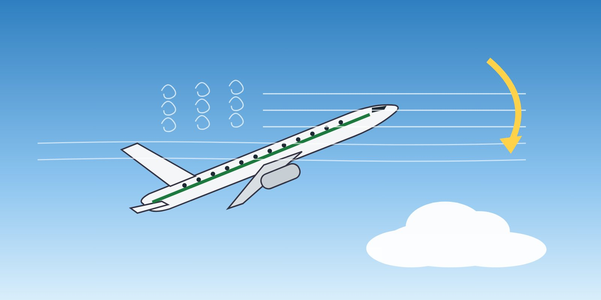

Module 6 · Recovery
Lesson 20: Stall Recovery
Lesson narration
Checking for narration…
Learning objectives
- Apply the industry stall recovery template.
- Explain each step and the reasons behind it.
- Recognise the conditions that make stall recovery difficult.

The stall recovery template
Following accidents in which crews tried to "power out" of stalls while holding altitude, manufacturers and authorities adopted a common stall recovery template. A typical version is shown below. Use your manufacturer's procedure.
| Step | Action | Why |
|---|---|---|
| 1 | Autopilot and autothrust — disconnect | The automation may be holding the nose up or reducing thrust; it will not recover a stall. |
| 2a | Nose-down pitch control — apply until the stall warning stops and the aircraft is no longer stalled | Reducing the angle of attack is the only way to unstall the wing. |
| 2b | Nose-down pitch trim — as needed | If the aircraft was trimmed nose-up, the elevator alone may not be enough. |
| 3 | Bank — wings level | Levelling the wings directs the lift vector upwards and reduces the load factor. |
| 4 | Thrust — as needed | Add thrust once the angle of attack is reduced; be aware of the nose-up pitching moment of underwing engines. At low speed with high thrust, reducing thrust may be needed to lower the nose. |
| 5 | Speedbrakes / spoilers — retract | They increase drag and the stall speed. |
| 6 | Return to the desired flight path | Recover smoothly, avoiding a secondary stall warning or excessive g. |
Important points
- Reducing angle of attack comes before everything else — including altitude. Accept the altitude loss.
- The stall warning is a stall. Treat any stall warning (except a confirmed false warning on take-off, if your procedure allows) as requiring the recovery template.
- A nose-down input may need to be large and sustained. A pitch attitude below the horizon may be required.
- Avoid a secondary stall: do not pull up too quickly after the warning stops.
- If the stick pusher activates, do not oppose it.
- Near the ground, the same template applies; only the urgency changes.
When stall recovery becomes difficult
- High altitude — little excess thrust, large altitude loss needed (Lesson 7).
- Nose-up trim — the stabiliser may need to be trimmed nose-down.
- High thrust with underwing engines — the nose-up moment opposes the recovery.
- Startle and unreliable instruments — the crew may not recognise that the aircraft is stalled.
Key takeaways
- Template: automation off → nose down (and trim) until unstalled → wings level → thrust as needed → speedbrakes retracted → return to flight path.
- Angle of attack first — altitude is secondary.
- Avoid a secondary stall; never oppose the stick pusher.
Knowledge check
During stall recovery, the nose-down elevator input does not reduce the angle of attack enough. What else may be needed?